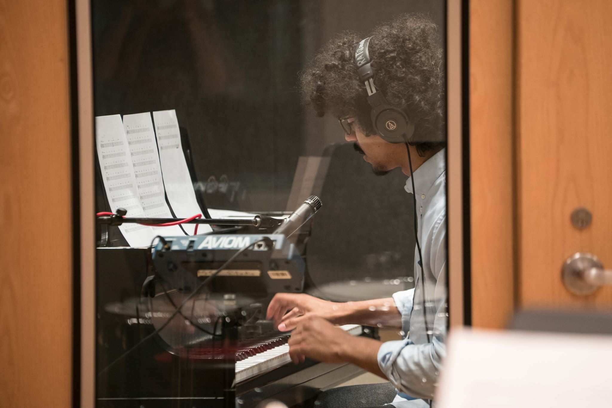
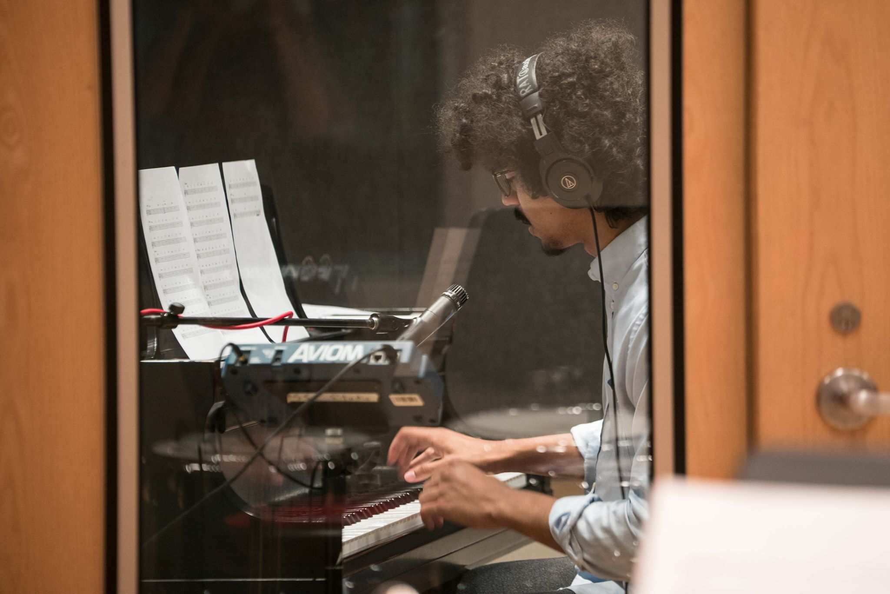

Welcome
Hi there, thank you for checking out my website. I was born in Philadelphia, Pennsylvania and grew up in an entirely Spanish speaking school environment. I gained an interest in Music at an early age, and began playing piano at age 10. At age 14, I was accepted into and attended a performing arts school in Midland, PA with a focus in piano.
After graduating high school, I moved to Cleveland, OH for a short period of time until going to Berklee College of Music in Boston. I was accepted into the study abroad program in Valencia, Spain and studied music production as well as Piano/Bass performance. Around this time, my interest was equally as much in computers as it was in music, and I enjoyed learning beginners programming courses in my spare time while involved with music. I decided to move to Seattle after returning from Spain because of the opportunities for a career in technology as well as having a great music scene. I want to have a meaningiful career in back-end software development, and believe that Code Fellows is the perfect place to do it.